Aircraft Technology
From the earliest biplanes of World War I to today's cutting-edge stealth fighters and unmanned systems, U.S. military aviation has continuously pushed the boundaries of technology and capability.
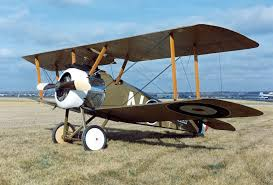
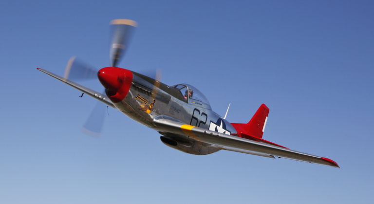
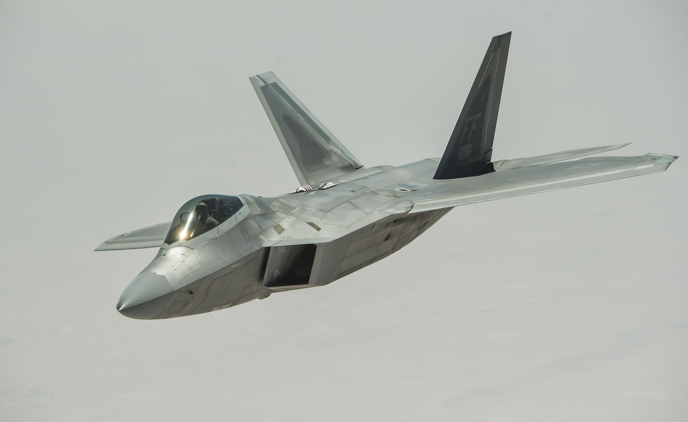
The evolution of U.S. aviation reflects a continuous push for speed, power, and technological superiority. To achieve air dominance, the U.S. military has consistently invested in research and development, leading to major advancements in aircraft design, propulsion, and avionics. However, the journey to air superiority began with a slow start. During the First World War, the United States relied heavily on French and British aircraft such as the SPAD XIII and Sopwith Camel as the U.S had no indigenous aircraft at the time. These aircraft were effective for their time, but they highlighted the U.S. dependence on foreign designs and the need for domestic innovation. In the interwar years, the United States made significant progress in aviation technology, improving engines, aerodynamics, and aircraft materials, which set the stage for a more advanced and independent aircraft industry.
By the start of Second World War, the United States had developed a powerful domestic aviation industry, producing iconic aircraft such as the P-51 Mustang and P-47 Thunderbolt. These fighters featured all-metal construction, powerful engines, and long-range escort capabilities that were critical to establishing air superiority. Aircraft like the P-51 Mustang, P-38 Lightning, and the F6F Hellcat played crucial roles in securing control of the skies over Europe. These advancements marked a turning point for U.S. aviation, as the United States established itself as a dominant force in aerial combat.
Following World War II, the Cold War era brought rapid advancements in U.S. aviation as global competition drove the development of jet propulsion and supersonic flight. Fighters such as the F-86 Sabre, F-4 Phantom II, F-14 Tomcat, F-15 Eagle, and F-16 Fighting Falcon defined this period with increased speed and missile-based combat, while the F-104 Starfighter pushed limits in altitude and velocity. In the modern era, fighter jets like the F-22 Raptor, F-35 Lightning II, F/A-18E/F Super Hornet, and F-15E/EX Strike Eagle would be designed with stealth, advanced avionics, and multirole capabilities to maintain air superiority in an increasingly contested global environment. These aircraft represent the pinnacle of U.S. aviation technology displaying the U.S ablity to design, build and maintain a powerful air force.
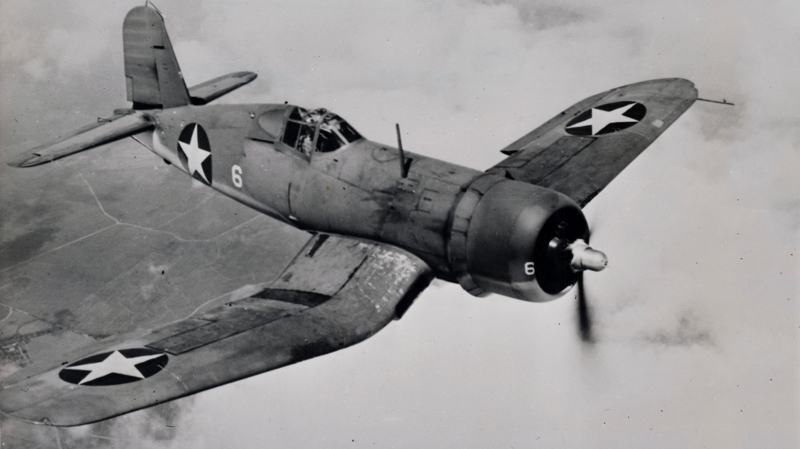
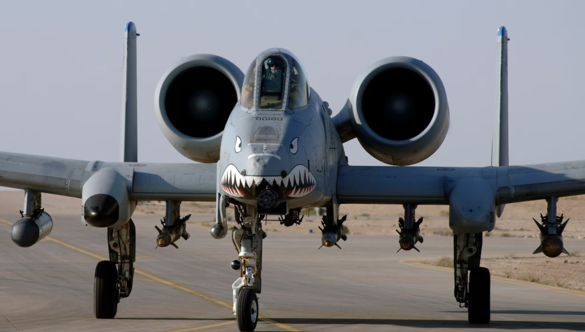
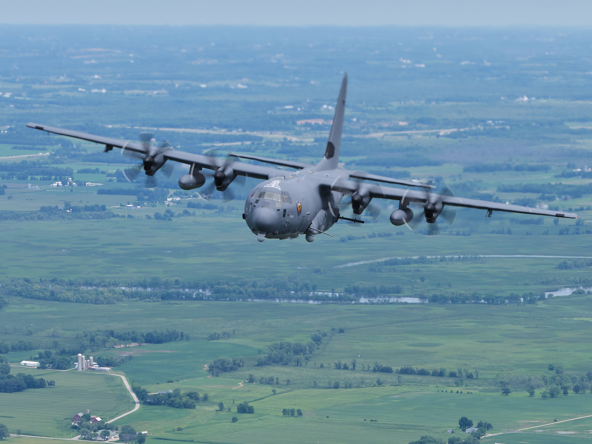
The evolution of U.S. attack aircraft reflects the growing need for close air support, precision strikes, and battlefield flexibility. During the early years of military aviation, aircraft such as the Airco DH.4 and later the SBD Dauntless and A-20 Havoc were used for bombing and ground attack roles. These early aircraft were relatively simple in design but played an important role in improving accuracy against enemy ground targets and supporting troops in World War I and World War II. The SBD Dauntless, in particular, became highly effective in naval warfare, famously contributing to U.S. success in carrier-based operations.
During the Cold War, attack aircraft became more specialized, faster, and capable of carrying heavier and more precise weapon loads. The A-1 Skyraider provided strong close air support during the Korean and Vietnam Wars, valued for its long loiter time and ability to carry large ordnance loads. Jet-powered designs like the A-4 Skyhawk and A-6 Intruder introduced higher speed and all-weather strike capability, while the A-6 in particular became known for its advanced navigation and bombing systems. This period marked a shift toward multi-role strike aircraft capable of operating in more complex combat environments.
By the late Cold War and modern era, attack aircraft evolved further to emphasize survivability, precision, and versatility. The A-10 Thunderbolt II was designed specifically for close air support, featuring heavy armor, long loiter time, and the powerful GAU-8 Avenger cannon for destroying armored vehicles. Alongside it, the AV-8B Harrier II introduced vertical/short takeoff and landing (V/STOL) capability, allowing operations from forward and improvised bases.In addition, platforms like the AC-130 gunship redefined aerial attack through sustained firepower and precision engagement from orbiting flight patterns. Modern attack aircraft continue to focus on precision-guided weapons, sensor integration, and survivability, ensuring they can support ground forces effectively in both conventional and asymmetric warfare environments.
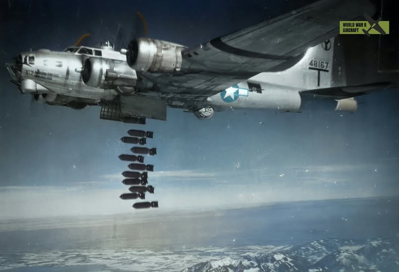
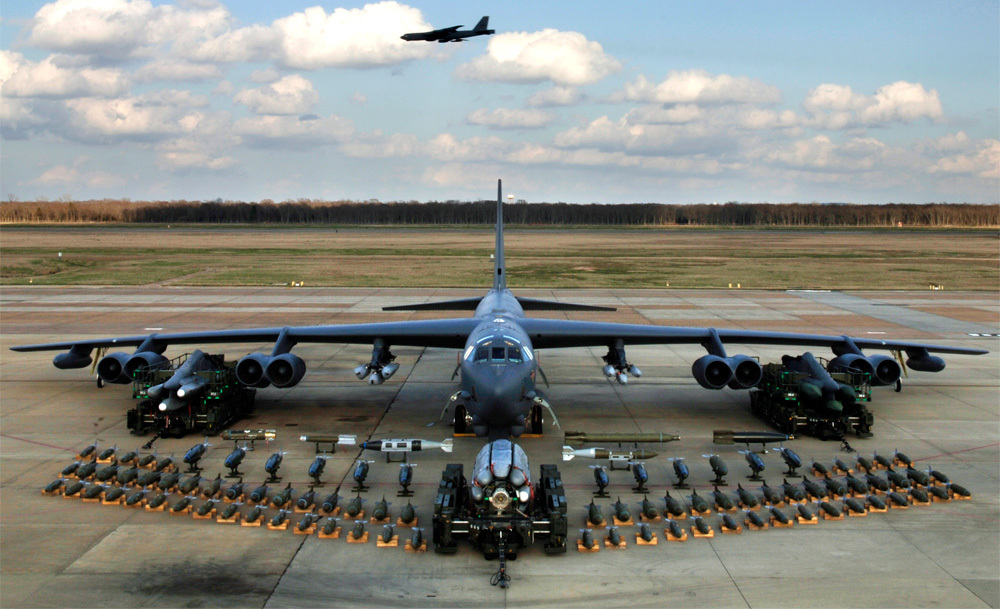
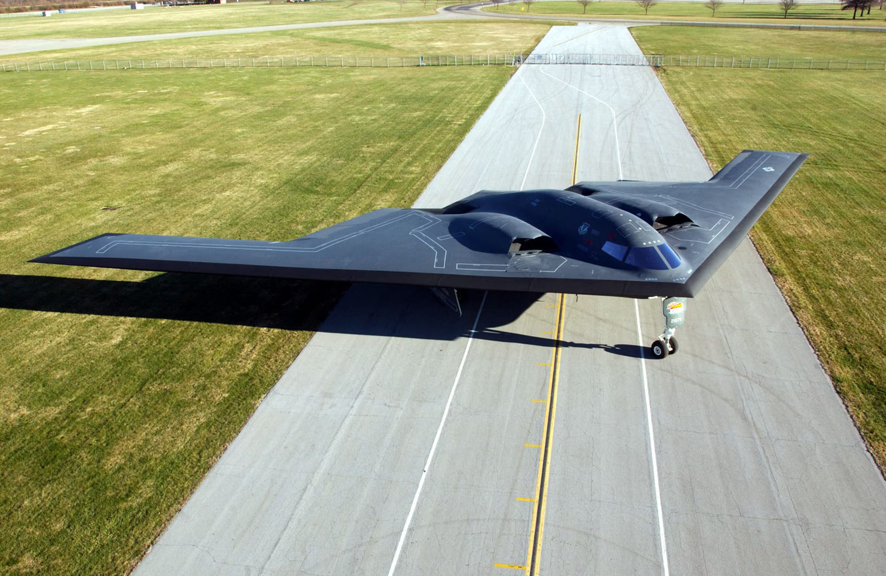
The evolution of U.S. bomber aircraft reflects a continuous and dramatic need for strategic bombers that prioritize long-range capability, heavy payload capacity, and survivability in contested environments. During the First World War, early bombers like Dayton-Wright DH-4 and later the Martin MB-1 introduced the concept of strategic bombing, but these early designs lacked the range and defensive capability needed for large-scale operations.
By the start of the Second World War, the United States had developed advanced long-range bombers such as the B-17 Flying Fortress, B-24 Liberator, and B-29 Superfortress. These aircraft represented major improvements in speed, range, payload capacity, and defensive capability. They featured heavy bomb loads for strategic targets, multiple machine-gun turrets for all-around defense, and advanced aerodynamics for long-distance missions. These bombers were highly effective for their time, enabling sustained strategic bombing campaigns across the European and Pacific theaters of World War II. However, these bombers would become obsolete at the turn of the Cold War as the development of surface-to-air missiles, radar-guided air defense systems, and jet-powered interceptor aircraft would make these aircraft vulnerable.
The Cold War saw major advancements in missile and nuclear technology that transformed bomber aircraft from slow, heavily armed platforms into faster, more survivable systems designed for nuclear deterrence and penetration of advanced air defenses. In response, aircraft such as the B-52 Stratofortress, B-58 Hustler, F-111 Aardvark, and B-1 Lancer were developed.The B-52 would become the backbone of U.S. strategic air power due to its long range, heavy payload capacity ands its ability to support both nuclear and conventional missions. In the modern era, stealth and precision dominate bomber design. The B-2 Spirit introduced radar-evading technology for deep penetration strikes, while the B-52 Stratofortress and B-1 Lancer remain in service with upgraded systems that allow them to continue performing a wide range of strategic and conventional missions. To maintain air superiority, the U.S. has began developing the B-21 Raider as the next-generation stealth bomber. Its advanced stealth design and modern avionics are intended to ensure survivability in highly contested airspace while delivering long-range precision strike capability.
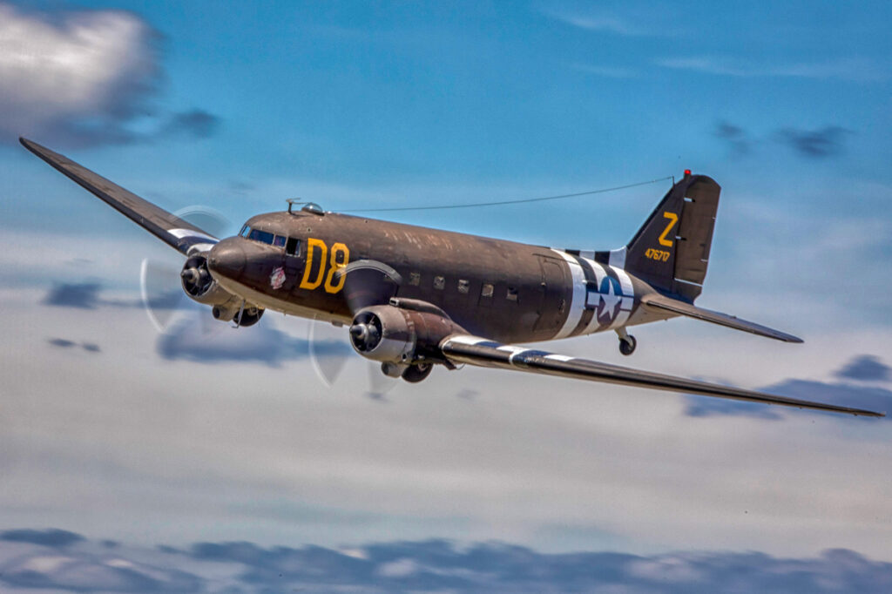
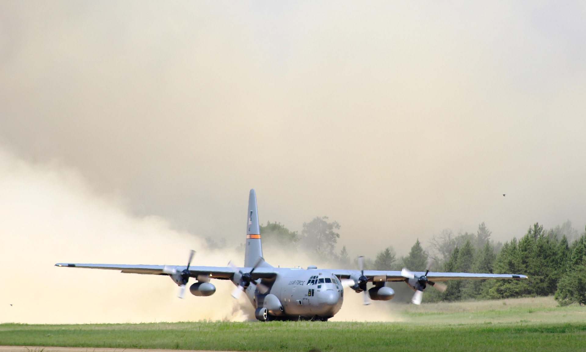
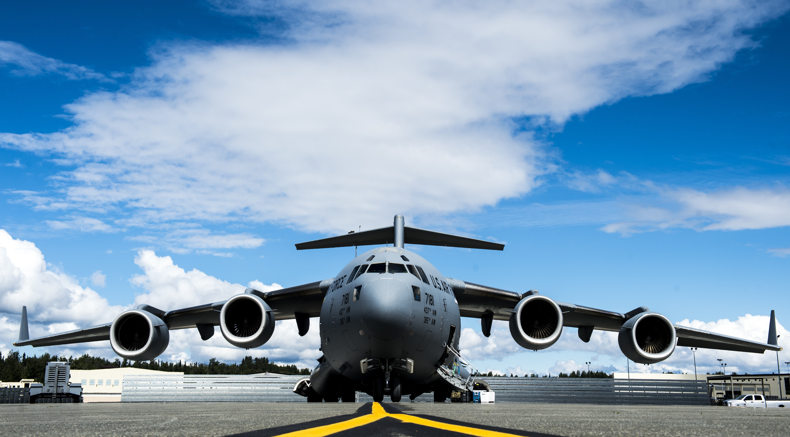
The evolution of U.S. military transport aviation reflects a steady advancement in range, capacity, and global mobility. Early aircraft such as the Junkers F.13, C-47 Skytrain, and C-46 Commando formed the backbone of World War II logistics. The C-47 Skytrain was especially vital, transporting troops, towing gliders, and delivering supplies across critical battlefronts. The C-46 Commando expanded cargo capability with greater payload capacity and strong performance in difficult environments. These early transports proved the importance of air mobility in modern warfare and set the stage for future large-scale logistics operations.
During the Cold War, U.S. transport aviation expanded significantly with aircraft such as the C-130 Hercules, C-141 Starlifter, and C-5 Galaxy. The C-130 Hercules became a highly versatile tactical transport, capable of operating from short and unimproved runways. The C-141 Starlifter introduced jet-powered strategic airlift, greatly increasing speed and global reach. The massive C-5 Galaxy further transformed airlift capability by transporting heavy equipment, oversized cargo, and entire military units across continents. Together, these aircraft enabled the United States to maintain rapid global deployment and sustained military presence worldwide.
In the modern era, transport aviation continues to evolve with platforms like the C-130J Super Hercules, C-17 Globemaster III, and KC-46 Pegasus. The C-130J improves efficiency and performance while maintaining tactical flexibility. The C-17 Globemaster III combines strategic and tactical airlift, delivering heavy cargo directly to forward operating locations. The KC-46 Pegasus enhances aerial refueling and cargo transport, extending the range and endurance of U.S. air operations. Collectively, these aircraft represent a highly efficient global logistics system that supports rapid deployment and modern military readiness.
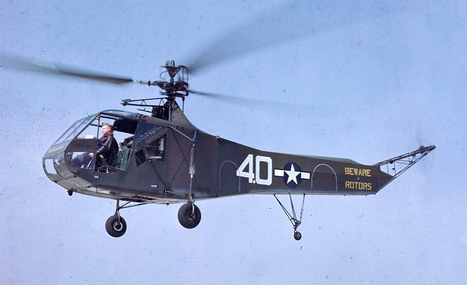

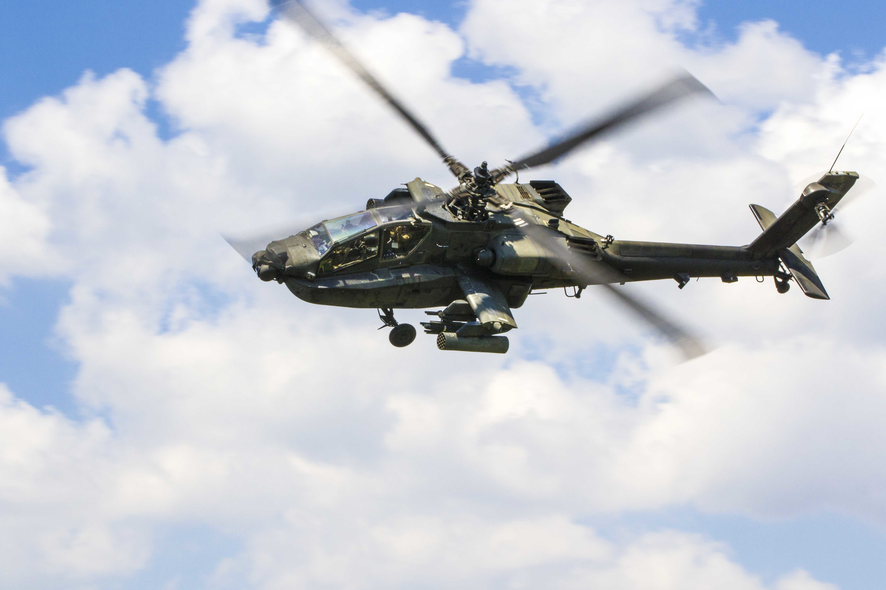
The evolution of U.S. military helicopters reflects major advancements in versatility, mobility, and battlefield support capabilities. Early rotorcraft such as the Sikorsky R-4 and R-6 marked the beginning of practical helicopter use during World War II, primarily for reconnaissance, medical evacuation, and limited transport missions. Although slow and mechanically simple compared to later designs, these early helicopters demonstrated the value of vertical lift in situations where fixed-wing aircraft could not operate effectively. Their success laid the groundwork for expanding rotary-wing roles in modern warfare.
During the Vietnam War and Cold War era, helicopters became essential to U.S. military operations with aircraft such as the UH-1 Huey, CH-47 Chinook, AH-1 Cobra, and AH-64 Apache. The UH-1 Huey revolutionized battlefield mobility by rapidly transporting troops and supplies, while the CH-47 Chinook provided heavy-lift capabilities for large-scale logistics. The AH-1 Cobra introduced dedicated attack helicopter firepower, and the AH-64 Apache refined that role with advanced targeting systems and precision weaponry.
In the modern era, helicopters like the UH-60 Black Hawk, AH-64E Apache, CH-47F Chinook, and V-22 Osprey continue to enhance speed, survivability, and mission flexibility. The Black Hawk serves as a highly reliable utility helicopter, the Apache E-model improves combat lethality with upgraded sensors, the Chinook F-model increases lift efficiency, and the V-22 Osprey adds tiltrotor speed and range. Together, these platforms demonstrate how U.S. rotary aviation has evolved into a highly adaptable force for both combat and support operations.
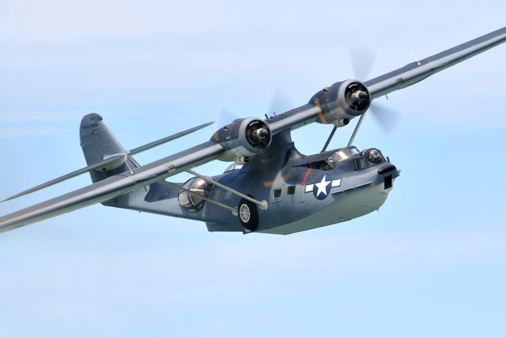
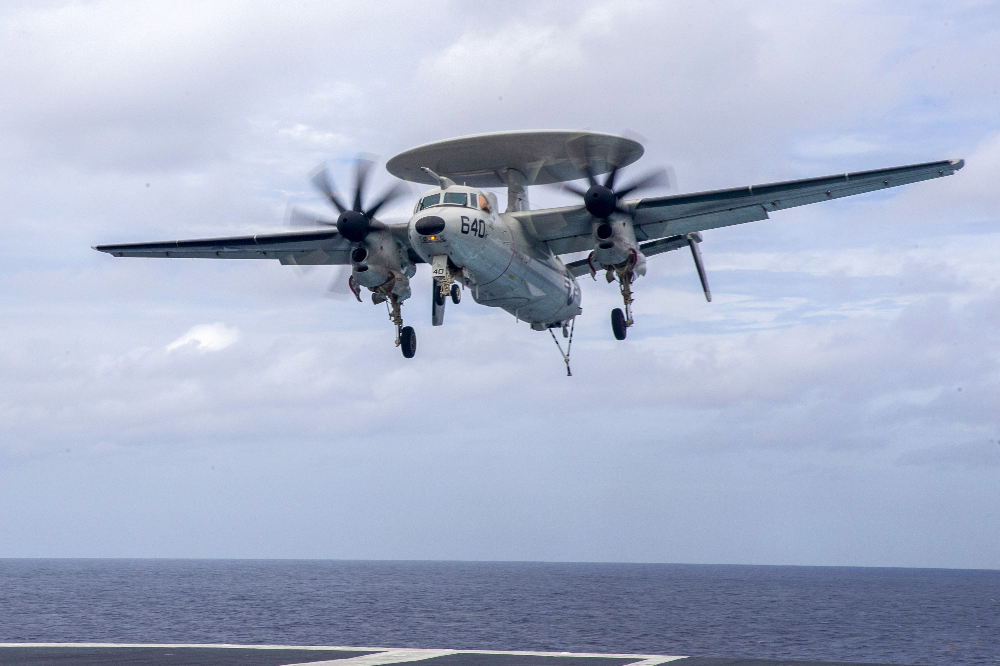
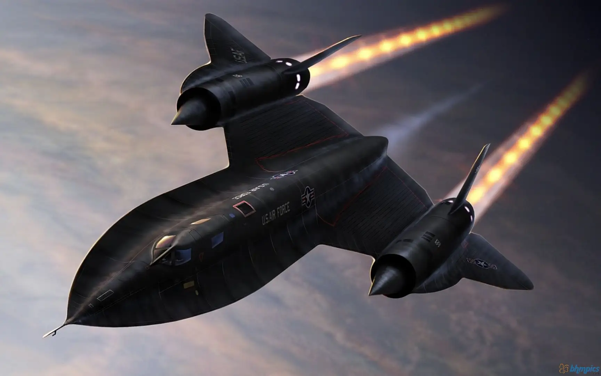
The evolution of U.S. reconnaissance aviation reflects a steady progression in intelligence gathering, speed, altitude, and surveillance capability. Early observation methods relied on simple reconnaissance aircraft and even balloons, with platforms such as observation balloons and adapted fighters like the P-38 Lightning being used to gather visual intelligence during World War II. The P-38, in particular, proved highly effective in long-range reconnaissance missions due to its speed, range, and twin-engine reliability, allowing it to capture critical information behind enemy lines. These early systems demonstrated the importance of real-time battlefield intelligence and laid the foundation for more advanced surveillance aircraft.
During the Cold War and modern era, reconnaissance capabilities expanded dramatically with the introduction of specialized high-altitude and electronic intelligence platforms. Aircraft such as the U-2 Dragon Lady, SR-71 Blackbird, and RC-135 significantly enhanced the United States’ ability to gather strategic intelligence. The U-2 provided long-duration, high-altitude surveillance, while the SR-71 Blackbird pushed the limits of speed and altitude to evade enemy defenses. The RC-135 further advanced the field through electronic signals intelligence and battlefield monitoring.
In the modern era, platforms like the E-3 Sentry, E-2 Hawkeye, P-8 Poseidon, and RQ-4 Global Hawk continue to expand surveillance capabilities through airborne early warning, maritime patrol, and unmanned long-endurance reconnaissance. Together, these aircraft illustrate the evolution from basic visual scouting to highly advanced, networked intelligence systems that provide continuous global situational awareness.
U.S. Military Aircraft Evolution: WWI to Present
| Type | Role | WWI–WWII (1914–1945) | Cold War (1945–1991) | Modern (1991–Today) |
|---|---|---|---|---|
| Fighter | Air superiority | SPAD XIII, Thomas-Morse S4C Scout, Sopwith Camel, P-51 Mustang, P-47 Thunderbolt | F-86 Sabre, F-4 Phantom II, F-104 Starfighter | F-15 Eagle, F-16 Falcon, F/A-18 Hornet, F-22 Raptor, F-35 Lightning II |
| Bomber | Strategic bombing | Airco DH.4,Caproni Ca.3, B-17 Flying Fortress, B-24 Liberator, B-29 Superfortress | B-52 Stratofortress, B-57 Canberra, B-58 Hustler, B-1 Lancer | B-2 Spirit, B-1B Lancer, B-21 Raider |
| Attack | Ground support | Airco DH.4, SBD Dauntless, A-20 Havoc | A-1 Skyraider, A-4 Skyhawk, A-6 Intruder, A-10 Thunderbolt II | A-10 Thunderbolt II, AV-8B Harrier II, AC-130 Gunship |
| Transport | Cargo & troops | Junkers F.13, C-47 Skytrain, C-46 Commando | C-130 Hercules, C-141 Starlifter, C-5 Galaxy | C-130J Super Hercules, C-17 Globemaster III, KC-46 Pegasus |
| Helicopter | Support & attack | Sikorsky R-4, Sikorsky R-6 | UH-1 Huey, CH-47 Chinook, AH-1 Cobra, AH-64 Apache | UH-60 Black Hawk, AH-64E Apache, CH-47F Chinook, V-22 Osprey |
| Reconnaissance | Surveillance | Observation balloons, P-38 Lightning | U-2 Dragon Lady, SR-71 Blackbird, RC-135 | E-3 Sentry, E-2 Hawkeye, P-8 Poseidon, Global Hawk |
| Drones | Unmanned missions | Kettering Bug, Radioplane OQ-2 | Firebee, Ryan Firefly | MQ-1 Predator, MQ-9 Reaper, RQ-4 Global Hawk, MQ-25 Stingray |